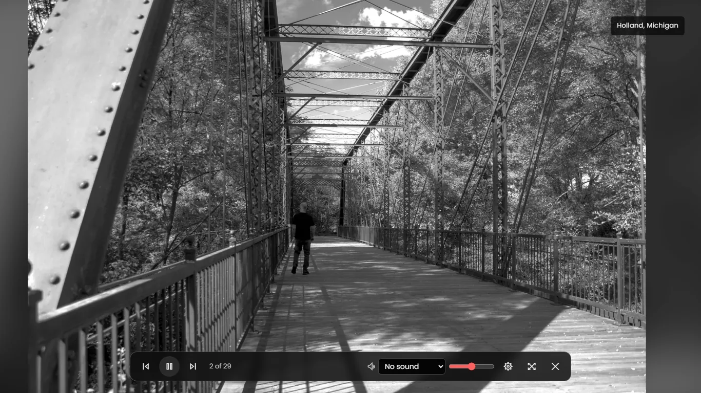
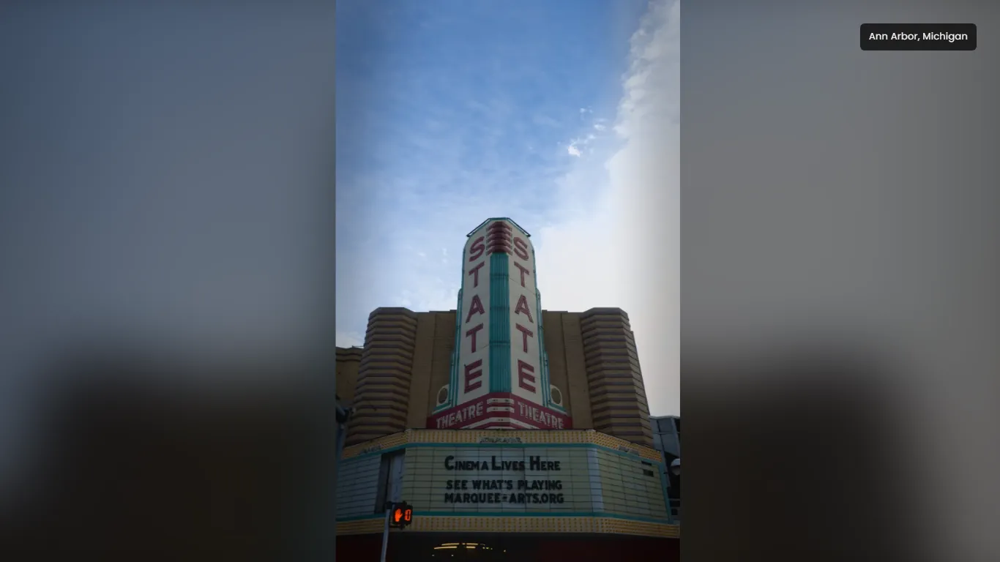
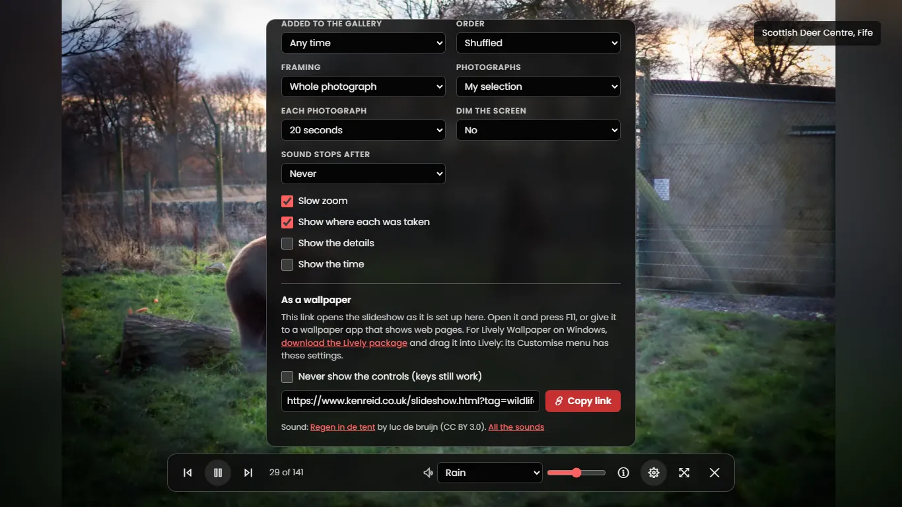
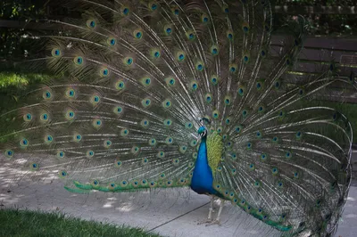
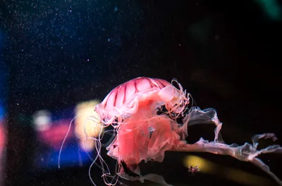

Technology · · 14 min read
Turning My Gallery Into a Wallpaper
How my gallery's slideshow works as a wallpaper, why every photograph needed a smaller copy, and where its fire, rain and café sounds come from.
Photograph © Ken Reid
Turning My Gallery Into a Wallpaper
Open www.kenreid.co.uk/slideshow.html?sound=fire, press F11, and my photographs play one at a time, full screen, with a fire crackling underneath. Point a wallpaper app at the same link and it's your desktop. I did this because I find photography particularly difficult to share. I'll go out and spend 2 hours taking 300 photos, I'll purge down to 10 over 30 minutes, then spend another 2 hours editing those 10, which are now 8. I then post them online, and my Mum and my wife comment and like them. I appreciate and love you guys for that, thank you for the support! But - I want to share it with others: photographers, people local to the area (I know I love seeing nice photos of where i live, work and frequent), and hopefully my shots are good enough that others can like them too. I have even made Google Chrome themes you can download, of some of my older shots, which were fairly successful (one had 100,000 downloads, which was so fulfilling). But how do you share beyond just posting on social media? Well, one way is to have your shots on display. Rather than spending a high sum on having prints made, I opted to show them on my website, via this feature, on my home TV occasionally. It means if we have guests over, I can have the TVs idle over these photos, slowly meandering through them, while some ambient sounds play. It often sparks conversation, and interest, more than a social media share does. So, this post covers the two ways into the slideshow, why it needed a smaller copy of every photograph I've ever put up, and where the sounds come from. Part of the series on how this site is built.
Quick jargon guide
- Query string: the part of a URL after the question mark, like
?sound=fire. - Hero: this site's name for a big copy of a photograph, 1920 pixels on its long edge, made for showing large.
- Release: a bundle of files attached to a GitHub repository. Mine holds the full-size originals.
- Wallpaper app: a program that puts something other than a still image behind your desktop icons. Lively Wallpaper on Windows can show a web page.
- Web Audio API: the browser's built-in kit for making and mixing sound in code.
- CC0 and CC BY: Creative Commons licences. CC0 gives a work away with no conditions; CC BY lets anyone use it as long as they credit whoever made it.
- LUFS: loudness units relative to full scale, a measure of how loud a recording sounds to people rather than how big its waveform is. Broadcasters level to it.
Two ways in
The gallery has a Slideshow button under its title, next to the one for the photo map. It plays the photographs your filter is showing, full screen, so if you've clicked Wildlife you get the wildlife photos only. Escape takes you back to the gallery, scrolled where you left it.
Full screen is... fiddly. A page can only ask the browser for full screen while it's handling a click or a key press[1], and the slideshow's script isn't on the gallery page at all until someone presses that button (it's nearly 100 KB, under 30 KB compressed, and there's no point every visit to the gallery downloading it). So the click asks for full screen first, then fetches the script, then opens the slideshow over the page. Done the other way round, the browser can decide the click is over by the time the script arrives, and you get a slideshow in a window.
The button is also a plain link to slideshow.html with the filter on the end, so middle-clicking it opens the same slideshow in a tab. That page is the second way in. It has no header, no footer and no menu, just the slideshow. On a computer where the window isn't already the size of the screen, I opted to make a line near the bottom that says to press F11 (Control + Command + F on a Mac) for a few seconds and then goes away.

Everything is in the address
A wallpaper app like Lively Wallpaper[2] can't click through a settings panel for you every time the computer starts, so I put every setting in the query string, and a link is the whole slideshow:
showpicks what plays: the photographs (the default), a tour of the places on the photo map, the quotes I've saved, the books I've read or the albums I play most. The photo map and the quotes, books and music pages have Slideshow buttons of their own.tag,placeandaddedchoose the photographs: a subject from the gallery's filters, a place from the photo map, or the photoset they arrived in.orderis shuffle, newest or oldest, andeveryis how many seconds each one stays up (20 unless you say otherwise).soundis fire, rain, storm (rain and thunder), forest, river, cafe or city, andvolumeruns from 0 to 100.fit=fillcrops each photo to fill the screen. Without it you see the whole frame, sitting on a blurred and darkened copy of itself, which fills the bars a portrait leaves on a wide monitor.drift=0stops the slow zoom,captions=0hides the place name, andcontrols=offmeans the controls never show up at all.sleepturns the sound off after so many minutes,dimdarkens the screen, andclockandinfoadd the time and date in the corner and each photo's number, place and subjects. Both come on by themselves withcontrols=off, since that's the wallpaper, andclock=0orinfo=0turns one off.

Of course that's just for users of a wallpaper app. The settings panel has a Copy link button that writes the address for whatever you've set up, with a tickbox for the wallpaper version. For Lively there's also a package to download from the same panel: drag it into Lively and the settings are in its Customise menu. Anything in the address that means nothing (a typo in a subject, a place I've never been) is dropped to prevent errors.

slideshow.html?tag=wildlife&sound=rain, and the line under it names whoever recorded the rain.I put the place caption in the top right corner. Windows puts the desktop icons down the left and the taskbar along the bottom, so that was the one corner left.
A smaller copy of every photograph
The full-size originals live on a GitHub release. Most of the older ones are a megabyte or two, but the new Canon EOS R ones run to tens of megabytes, and the biggest are over 70 MB. GitHub answers every request for one of them with Cache-Control: no-cache, so the browser checks back with GitHub each time a photo comes round again instead of trusting the copy it already has.
At 20 seconds a photo, a wallpaper left on all day shows 4,320 of them. With the originals, that's tens of gigabytes a day, for a background. So yeah, I had to fix that.
Until October only the photographs a page or post shows had a hero, about 180 of them. Now I have a script make one for every frame from its original, 1920 pixels on the long edge and never enlarged, so the early 1200-pixel frames stay 1200. Most come in under 300 KB. Frame 589's is 193 KB, about a three-hundredth of its 62 MB original, and still more pixels than a 1080p monitor can show. The site's checks now fail if any frame is missing one, and the routine I follow for adding photographs makes it alongside the thumbnail to save time later.
The next photo is fetched and decoded while the current one is still up, to try and circumvent issues with wifi! If a hero won't load, the 800-pixel thumbnail stands in, and a frame with neither gets skipped. When the slideshow gets to the end of the list it fetches the lists of photographs again before starting over, so a wallpaper that's been running for a week picks up the photosets I've added since, and a shuffle never starts the new pass on the photo that ended the last one. I may have spent too long on this feature that only I will likely use!
Sounds, second time round
My first go made the sounds in the browser, with no recordings at all: filtered noise for the steady part, and drops, crackles, birds and cars drawn at random on top of it with the Web Audio API[3]. I wanted a bunch of them, including a café murmur built out of fake vowels, measured them, balanced them, and checked them on spectrograms. I was having wild success, considering I'd never done anything like it before, but it sounded pretty awful despite leaps and bounds of progress, so I decided I was wasting my time.
The sounds now are recordings people have shared under free licences, from Wikimedia Commons and OpenGameArt, where every file has its licence on its page:
- Fire: a fireplace loop by PagDev (CC0).
- Rain: rain on a tent, recorded by luc de bruijn (CC BY 3.0).
- Rain and thunder: a summer thunderstorm uploaded by stephan (public domain).
- Forest: a dawn chorus in Shipton Gorge, Dorset, by Silas S. Brown (public domain).
- River: a creek in Webster, New York, by Dsw4 (public domain).
- Café: people chatting in a café, by Marble Toast (CC0).
- City at night: a two-lane road in Kelowna at midnight, by Extemporalist (CC0).
CC0 and public domain need no credit.
A short script does the looping, cross-fades the 4 seconds after it into its first 4 seconds so the end runs straight into the start, levels it to -20 LUFS so switching sounds doesn't mean touching the volume, and keeps its peaks around -1 dB. The city needed 32 dB of gain: the original sits at -52 LUFS, which is about what an empty road at midnight sounds like. All seven come to 7.7 MB as MP3s, and the browser only fetches the one you pick. I didn't really want anything too long bogging down downloads and storage.
An <audio> element set to loop can leave a small gap at the end, and an MP3 starts with a few milliseconds of silence the encoder adds. So each file is its loop with one second of its own end before it and one second of its start after it. The slideshow decodes the file with the Web Audio API and loops it from second 1 to second 1 plus the loop's length[5], and wherever that bit of silence lands, the span in between is one whole turn of the loop. A decoded 96-second stereo loop takes about 35 MB of memory, so only the sound that's playing is kept decoded.
-
Made once, by a script
- Recording Commons, OpenGameArt Somebody else's recording, shared under a free licence, with the licence on its page.
- Loop 25 to 96 seconds A stretch of the recording, with the 4 seconds after it cross-faded into its first 4 seconds so the end runs straight into the start.
- Level -20 LUFS Every loop is as loud as the others, peaks around -1 dB. The city needed 32 dB of gain to get there.
- Pad 1 second each end One second of the loop's own end goes in front of it and one second of its start after it, then it's saved as an MP3.
-
In your browser
- Fetch 0.4 to 1.3 MB Only the sound you pick is downloaded, and only once you pick it.
- Decode Web Audio API The MP3 is unpacked into raw sound in memory, about 35 MB for a 96-second loop, so only the one playing is kept.
- Play 1 s to 1 s + the loop The browser plays that span round and round. The few milliseconds of silence an MP3 starts with land in the padding, so the span is always one whole turn of the loop.
js/slideshow.js: starting a loop, trimmed
const src = ctx.createBufferSource();
src.buffer = buffer; // the decoded file
src.loop = true;
src.loopStart = SOUND_PAD; // 1 second in
src.loopEnd = SOUND_PAD + sound.loop; // one whole turn later
src.connect(out);
src.start(0, SOUND_PAD);BUT, browsers won't play sound on a page until the person has clicked or pressed a key on it[6], which is fair, nobody wants a tab that screams at them. So a link with sound= in it opens silent, with "Click anywhere for sound" at the top, and the first click starts it.
Accessibility
Over the gallery, the slideshow is considered a dialog. Stuff that is behind it is made inert[7], so the Tab key can't wander off into the gallery behind it, and closing it puts focus back on the Slideshow button. The keys work whether the controls are showing or not: space pauses, the arrows step, F toggles full screen, M toggles the sound, I the details, Escape closes the settings and then the slideshow. On a phone, a swipe left or right on the photo does what the arrows do. It has to be clearly more sideways than up or down and at least 50 pixels long, so a wobbly tap doesn't count, and the first time you open it a line at the bottom tells you you can, until you've swiped once.
The controls fade out after 2.6 seconds without the mouse moving, and the pointer goes with them, unless the mouse is resting on them. On a phone a tap on the photo brings them up and the next tap puts them away, and the settings panel closes by itself after 10 seconds of inactivity. They hide the way all my floating controls do (the accessibility post has the rest of them): once they're gone they're out of the Tab order too, so nobody tabs onto a button they can't see. The photos change on their own, so I don't tell a screen reader about each one, because a voice reading out a new photograph every 20 seconds, all day, sounds ridiculous to me at least. It does hear about the ones you step to yourself, with the place and "12 of 108". Every photo has alt text with its number and, where I've put it on the map, the place.
If your system asks for reduced motion, there's no slow zoom and the photos cut from one to the next instead of fading. And while the slideshow is playing it asks for a screen wake lock[8], so a laptop running it in a browser doesn't dim and lock halfway through, and it lets go the moment you pause.
What it doesn't do
Sadly, there's no date a photo was taken in my data. The "Added to the gallery" setting goes by photoset, which only goes back to May 2026, so everything before that is one big lump called "Before May 2026". I'd have to read the dates out of hundreds of originals before I could filter by year.
Phone browsers that don't let a page go full screen don't get a full screen button, and the slideshow fills the browser window instead. It works in an iframe (GitHub Pages doesn't send anything that stops a page being framed), which is how the Lively package shows it.
The link for wildlife, shuffled, over the fire, with no controls, is slideshow.html?tag=wildlife&sound=fire&controls=off.


Common questions
How much data does it use as a wallpaper?
At the default 20 seconds a photo, a few photos a minute at a hundred-odd KB each, so roughly 20 MB an hour while it works through the photographs. A sound is one file of 0.4 to 1.3 MB, fetched once when you pick it. Hell of a lot less than the ~80mb photos I have in full resolution each!
Can I use it with only my favourite place?
Yup, place= takes any place from the photo map, spelled the way the map spells it, so slideshow.html?place=Falkirk%2C%20Scotland plays only the photos from Falkirk. The settings panel lists every place with its count, and Copy link writes the address for you.
References
- MDN Web Docs. Element: requestFullscreen() method. https://developer.mozilla.org/en-US/docs/Web/API/Element/requestFullscreen
- Lively Wallpaper. https://www.rocksdanister.com/lively/
- MDN Web Docs. Web Audio API. https://developer.mozilla.org/en-US/docs/Web/API/Web_Audio_API
- Creative Commons. Attribution 3.0 Unported (CC BY 3.0). https://creativecommons.org/licenses/by/3.0/
- MDN Web Docs. AudioBufferSourceNode: loopStart property. https://developer.mozilla.org/en-US/docs/Web/API/AudioBufferSourceNode/loopStart
- Chrome for Developers. Autoplay policy in Chrome. https://developer.chrome.com/blog/autoplay
- MDN Web Docs. HTML inert global attribute. https://developer.mozilla.org/en-US/docs/Web/HTML/Global_attributes/inert
- MDN Web Docs. Screen Wake Lock API. https://developer.mozilla.org/en-US/docs/Web/API/Screen_Wake_Lock_API